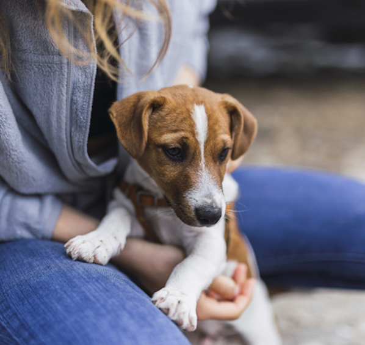

¿Cómo Adoptar?
En Fundación La Manada brindamos el servicio de adopción de animales de una forma fácil y sencilla, si deseas encontrar un nuevo integrante peludo a tu familia sigue los pasos que te mostramos a continuación y verás que pronto tendrás a tu amigo peludo disfrutando contigo en casa.
